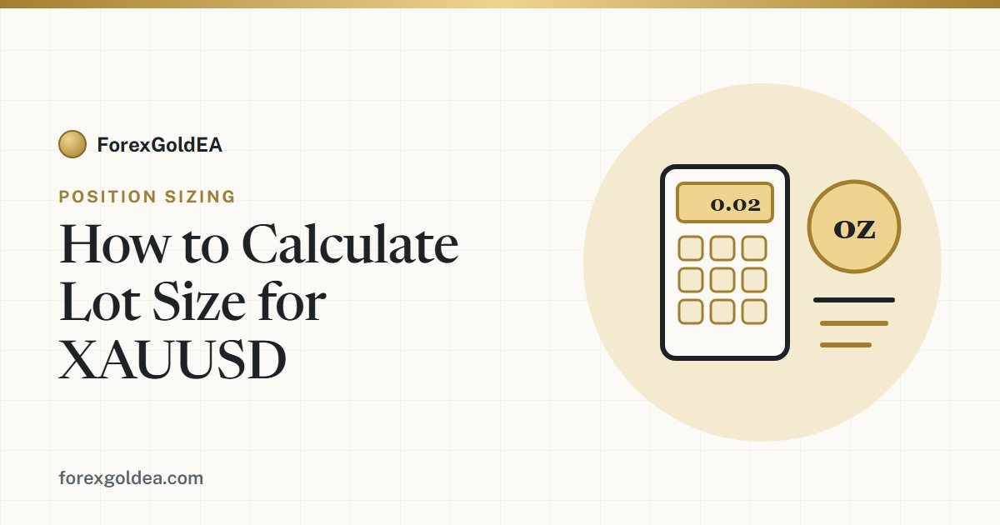

How to Calculate Lot Size for XAUUSD

Getting the lot size right is the difference between a controlled loss and a painful one. The calculation itself takes about ten seconds once you know the formula — the hard part is knowing what the numbers on a gold chart actually represent. This guide walks through the exact math, with worked examples you can copy.
The formula
Every position-size calculation answers the same question: how many lots can I trade so that, if my stop-loss is hit, I lose exactly the amount I decided to risk? On XAUUSD it looks like this:
That "100" is the only gold-specific part, and it comes from the contract itself: one standard lot of XAU/USD is 100 ounces. Everything else is the same position-sizing logic you would use on any market.
What a lot actually means on gold
Before using the formula, it helps to have an intuitive feel for the sizes:
| Lot size | Ounces | P/L per $1 move in gold |
|---|---|---|
| 1.00 (standard) | 100 oz | $100 |
| 0.10 (mini) | 10 oz | $10 |
| 0.01 (micro) | 1 oz | $1 |
The shortcut worth memorising: at 0.01 lots, a $1 move in gold is roughly $1 of profit or loss. Scale from there — 0.05 lots means a $1 move is about $5.
Step by step
- Decide your risk in dollars. Take a percentage of your balance — commonly 1–2%. On a $1,000 account, 1% is $10.
- Measure your stop-loss in dollars. Not pips, not points — the actual price distance. If you enter at $2,400.00 and your stop is at $2,395.00, the distance is $5.00.
- Apply the formula. Risk ÷ (stop × 100).
- Round down to the nearest size your broker allows, usually 0.01.
Worked examples
| Account | Risk | Stop distance | Calculation | Lot size |
|---|---|---|---|---|
| $500 | 2% = $10 | $5.00 | 10 ÷ (5 × 100) = 0.02 | 0.02 |
| $1,000 | 1% = $10 | $8.00 | 10 ÷ (8 × 100) = 0.0125 | 0.01 (rounded down) |
| $2,000 | 2% = $40 | $10.00 | 40 ÷ (10 × 100) = 0.04 | 0.04 |
Check the first one to see why it works: 0.02 lots is 2 ounces. If gold moves $5 against you, that is 2 × $5 = $10 — exactly the risk you set. The formula is simply that sentence rearranged.
Prefer to skip the arithmetic? Our gold lot size calculator does the same calculation instantly — enter your balance, risk percentage and stop distance, and it returns the size.
Pips, points and dollars — the part that trips people up
Most confusion on gold comes from mixing units. Brokers do not all quote XAUUSD the same way:
- On most platforms, 1 pip = a $0.10 move, so a 50-pip stop is a $5.00 distance.
- Some brokers quote in points, where 1 point = $0.01, making that same $5.00 distance 500 points.
The formula needs the distance in dollars, so convert first. If you are unsure which convention your broker uses, open a chart, note the price, and move your cursor one tick — the smallest increment tells you immediately. Our gold pip calculator converts between pips, points and dollar value for any lot size.
Broker differences to check
The formula is stable; the inputs are not always. Before trusting a number, confirm these in your platform's contract specification for XAUUSD:
- Contract size. 100 ounces per lot is standard, but not universal. If your broker differs, replace the 100 in the formula.
- Minimum and maximum lot. Usually 0.01 minimum, but some accounts require more.
- Cent accounts. These scale everything down — a "lot" means something different, so read the spec rather than assuming.
- Spread and commission. Not part of the lot calculation, but they add to the real cost of a losing trade, so your actual loss will be slightly more than the planned risk.
Common mistakes
- Rounding up. 0.0125 becomes 0.01, not 0.02. Rounding up silently breaks the rule you just calculated.
- Mixing pips and dollars. A "50" that is actually 50 points, not 50 pips, produces a lot size ten times too large.
- Sizing from leverage. Leverage decides the margin needed to hold a trade, not what you lose when the stop hits. It should not appear in this calculation at all.
- Using a fixed lot forever. A size that was sensible at $500 is no longer sensible at $2,000 — or after a drawdown.
- Forgetting to recalculate when the stop distance changes. A wider stop needs a smaller lot to keep the same risk.
How this works inside an EA
If your expert advisor has a risk-percent setting, it is running this exact calculation on every trade — reading the current balance, measuring the stop distance the strategy has chosen, and sizing accordingly. That is why risk-percent sizing adapts as the account grows or shrinks, while a fixed-lot setting does not.
It is worth checking which mode your EA uses. A fixed 0.10 lot that felt reasonable on a $5,000 account becomes reckless on $800 after a drawdown, and no amount of good strategy logic will save an account that is sized wrong. For how this fits alongside daily loss limits and drawdown ceilings, see our guide on how much money you need to run a gold EA.
Want the calculation done for you?
Use our free gold lot size calculator, or get ForexGoldEA and set risk as a percentage — the EA sizes every trade automatically.
Open the Lot Size Calculator Talk to us on Telegram →Frequently asked questions
What is the lot size formula for XAUUSD?
Risk in dollars ÷ (stop-loss distance in dollars × 100). The 100 is the contract size, since one standard lot is 100 ounces of gold.
How much is 0.01 lot in gold?
0.01 lots is 1 ounce, so a $1 move in the gold price is roughly $1 of profit or loss. It is the smallest size most brokers allow.
How do I convert a stop in pips to dollars?
On most brokers 1 pip on XAUUSD is a $0.10 move, so 50 pips is $5.00. If your broker quotes points, 1 point is $0.01 and 500 points is the same $5.00.
Should I round up or down?
Always down. 0.0125 becomes 0.01. Rounding up means risking more than you planned.
Does the formula change between brokers?
The formula stays the same, but check the contract size — 100 ounces per lot is standard, not guaranteed, and cent accounts scale differently.
Does leverage change my lot size?
No. Leverage affects the margin required to hold the position, not the loss if your stop is hit.
Does an EA calculate this automatically?
If it has a risk-percent setting, yes — it applies this calculation on every trade. A fixed-lot setting does not adapt.
Risk disclosure: Trading foreign exchange and CFDs on margin, including gold (XAU/USD), carries a high level of risk and may not be suitable for every investor. You can lose some or all of your capital. Figures in this article are illustrative examples using a 100-ounce standard contract — always confirm the contract specification with your own broker. Correct position sizing controls the size of a loss; it does not prevent losses. ForexGoldEA is a trading tool, not financial advice.